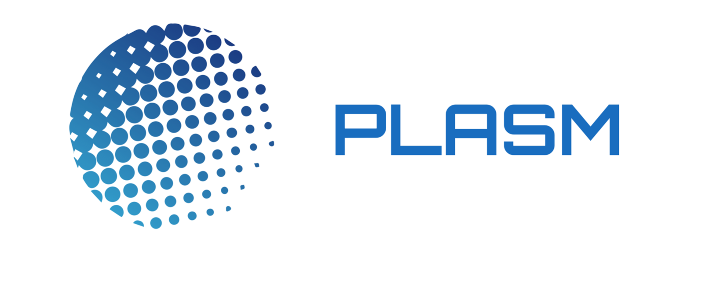

Reminder: This is the first draft. We will polish this draft to make it more understandable and more professional.
Introduction
 We aim to realize Web3.0 via blockchain technology. The traditional social structure allows people with authority to monopolize information, and history has proven that these people will bend the rules to their benefit(ref: Saving Capitalism: For the Many, Not the Few). Even if people claim that their system is fair, it still lacks transparency, proving that everything is still conceived upon pillars of sand that are called trust. In contrast to this, blockchain provides a system with decentralized governance that does not require a single group or organization to manage everything, effectively removing a single point of failure and making a transparent and trustless system. This is possible because blockchain is a system that allows anyone to view, prove, and host with a highly fault-tolerant consensus mechanism(Mastering BitCoin).
For end-users to fully utilize the strengths of the blockchain protocol, there must be an application that provides an interface to them. Applications that work on top of blockchains are referred to as Decentralized Applications (Dapps). Currently, there are countless Dapps developed in the form of smart contracts and chain codes that are deployed on a blockchain, providing utility for various people. However, due to the decentralized nature of Dapps, the processing speed is far from fast. At the time of this writing, the second-biggest blockchain that acts as a Dapp platform is Ethereum, which can process around 15 transactions per second (ref:Ethereum Transaction Throughput). In contrast to this, VISA or Alipay can process around 1,700 transactions (ref:Visa Transaction Throughput) and 256,000 transactions respectively (ref:ALIPAY Transaction Throughput). It is true that the transaction speed for Dapps is very slow for users to utilize this technology to its full potential. To solve this issue, there have been several blockchain scalability solutions being proposed.
These are some of the well-known blockchain scalability solutions.
SegWit: Fixing transaction malleability by removing the signature information and storing it outside of the base transaction block.
State Channel: Combining off-chain transactions among particular users and only the final state is committed to the main blockchain.
Sharding: Allowing many more transactions to be processed in parallel at the same time by making shards.
Plasma: Storing transactions in separate child chains and only the root hash is stored in the main chain.
From here, we want to focus on processing transactions outside of the main chain, called the Layer 2 solution. Layer 1 refers to public blockchains like Ethereum or Bitcoin. In recent years, this layer is suffering from increased transaction capacity, making the blockchain "full" (ref:"The Ethereum-blockchain size has exceeded 1TB, and yes, it’s an issue"). From this, we can predict that in about a decade, blockchain will have a different usage, where Layer 1 is used as the trust layer, while Layer 2 is the transaction layer.
Among all layer2 solutions, the reason we focus on Plasma is that it is a scaling solution that is the least dependent on the processing performance of the main chain. In Plasma, an operator manages its side-chain without sacrificing decentralization. This means that many transactions can be handled in a centralized way that does not require a consensus process, but all participants on the side chain can safely exit by submitting fraud proofs. The scaling solutions used in the existing centralized system can be used as they are. Hence, it is possible to achieve high processing performance that is not feasible with a native distributed ledger. Plasma should be recognized as an indispensable technology in the future because it can dramatically improve processing performance for all distributed ledgers.
However, Plasma has several drawbacks. First, there is a limitation on what can be done with Plasma Applications (Plapps). All the things that Plasma can is described with the first-order predicate logic as "Predicate".
Second, it is more difficult to make Plapps compared to making a traditional Dapp as writing and deploying smart contracts is not enough to develop them. Plasma is a complicated technical stack that consists of several components relying on each other(refer:Plasma Components). Plasma application consists of 4 components, a smart contract on a parent chain, a child chain, an operator, and a user. We address these two problems via the "Plasm Network". This provides a set of standard libraries that enable us to write a "Predicate". Adding to this, we provide cloud services to deploy and manage the Plasma components. We will discuss this in detail in the later section.
With these tools, Plasm Network developers can build their applications with ease.
We use the Optimistic Virtual Machine OVM, which was invented by the Plasma Group from the Ethereum Foundation. OVM is the virtual machine designed to support all layer2 protocols. It is a possible unification of all layer2 scalabilities constructions. This means that Plasm Network will not only be for Plasma applications but also for State Channel applications or any other layer2 protocols such as Optimistic Rollup and ZK Rollup. Our aim is to be a platform that houses all layer2 scaling solutions. Users can choose which solution to use and make their use case possible with minimal overhead.
We are planning to build these systems around Polkadot. Polkadot is a heterogeneous multi-chain framework that empowers blockchain networks to work together under the protection of shared security. In addition, there is a framework to create blockchains called Substrate. Currently, Polkadot itself and parachains are created with Substrate. We believe that multiple blockchains with different functions will work in parallel, rather than maximizing a single blockchain due to the fact that currently there is no single perfect blockchain which supports all governance models and customer's needs by itself. Instead, there are more than 900 public blockchains have been built and more and more blockchains are being created, each serving a different purpose. Polkadot and Substrate empower this movement of creating the perfect custom blockchain based on the user's need. We believe that Layer2 is one of the most promising domains on Polkadot as Dr. Gavin, the co-founder of Ethereum and creator of Solidity Language, showed interest in this during the Subzero Summit. We aim to implement this Layer2 solution for Polkadot and Substrate.
Presented by StakeTechnologies.